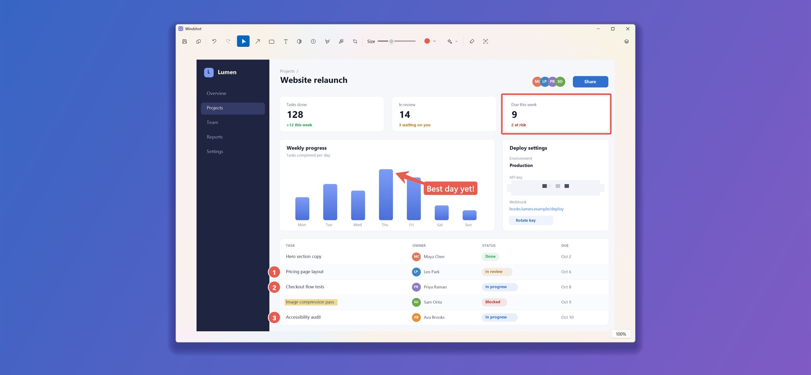
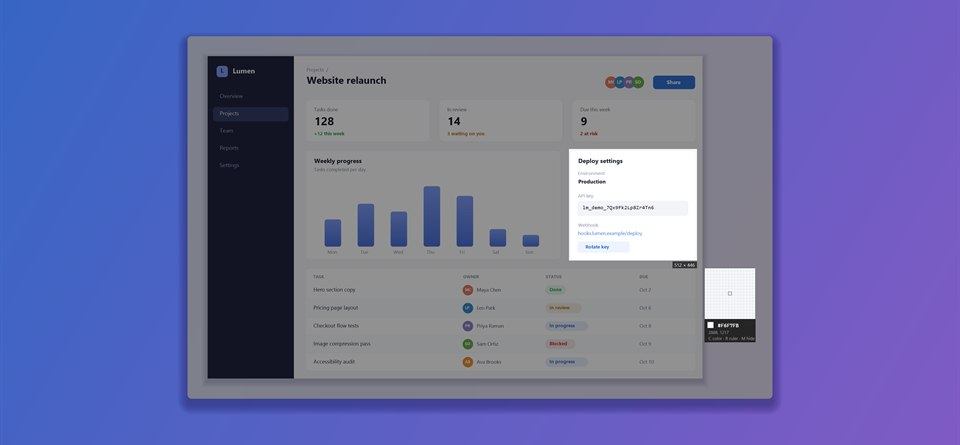
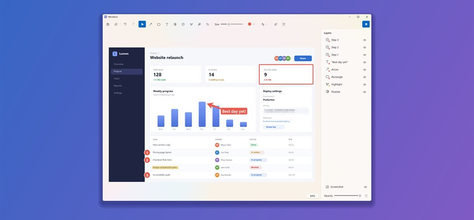
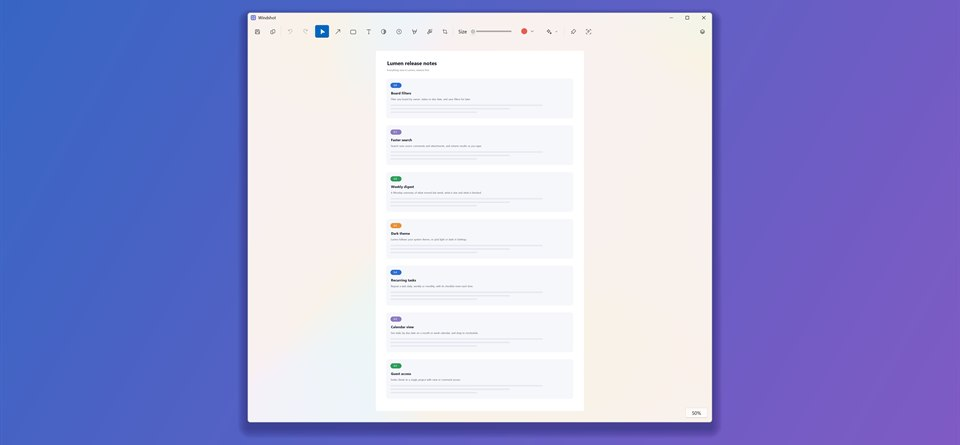
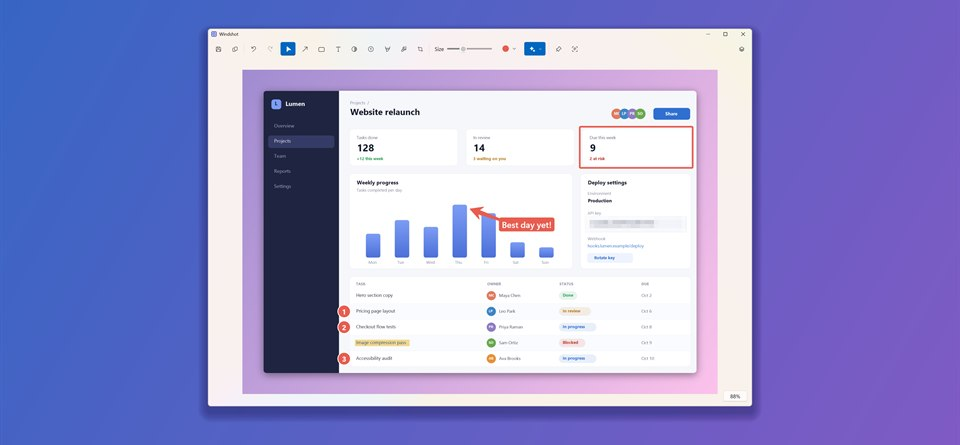
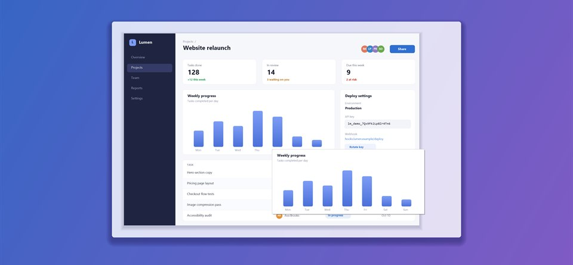
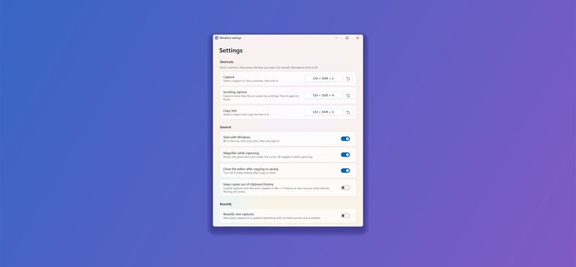

Screenshots, sharpened.
Windshot captures any part of your screen in a keystroke, then opens an editor where every arrow, box and blur stays editable until you're done.
See it in action
Click any screenshot to see it full size.


Annotate in seconds
Arrows, boxes, text, numbered steps, highlighter and blur, all still editable.


Capture any region or window
A magnifier and color picker help you land on the exact pixel.


Layers
Restack, hide, rename and fade annotations like in a photo editor.


Capture the whole page
Scrolling capture stitches a long page into one image.


Beautiful, and ready to share
A gradient backdrop with rounded corners and a shadow.


Pin it above everything
Float a capture above your other windows while you work.


Make it yours
Change any shortcut, including Print Screen, and start with Windows.
Everything a screenshot needs
Small, fast and keyboard-friendly. It lives in the tray until you need it.
Capture in a keystroke
Drag a region, or click a window to capture it with its rounded corners intact. A magnifier and color picker help you land on the exact pixel.
Annotations that stay editable
Arrows, boxes, text, numbered steps, highlighter, spotlight and blur. Move, resize or restyle any of them at any time, and the canvas grows when you draw past the edge.
Layers
Restack, hide, rename and fade annotations like in a photo editor. Blur and spotlight work like adjustment layers on everything beneath them.
Scrolling capture
Capture a whole web page or long document. Scroll it yourself or let auto-scroll do it, and Windshot stitches the frames into one tall image.
Copy text from anything
Select part of the screen and copy the words in it, using Windows' built-in text recognition. It works offline, on your PC.
Pin it on screen
Float a capture above your other windows while you work. Zoom it, fade it, and find it right where you left it after a restart.
Beautify
Set a capture on a gradient backdrop with rounded corners and a soft shadow, ready to share.
Crop and redact
Tighten the frame after the fact, and pixelate anything private before it leaves your hands.
Made for Windows 11
Fluent design, Mica, light and dark mode, and crisp at any display scale.
Keyboard first
Every shortcut can be changed in Settings, including Print Screen.
- Capture a region or window Ctrl + Shift + 2
- Copy text from a region Ctrl + Shift + 3
- Scrolling capture Ctrl + Shift + 4
- Copy the color under the cursor C
- Copy the edited image Ctrl + C
- Pin to screen Ctrl + P
- Arrow, rectangle, text, blur A R T B
- Show or hide layers L
Your screen stays yours
Screenshots often show things that are nobody else's business. Windshot is built accordingly.
No account
Nothing to sign up for or sign in to.
Nothing sent anywhere
Windshot makes no network connections of its own. No analytics, no tracking, no ads.
On your PC
Captures go only where you copy, save or pin them. Privacy policy